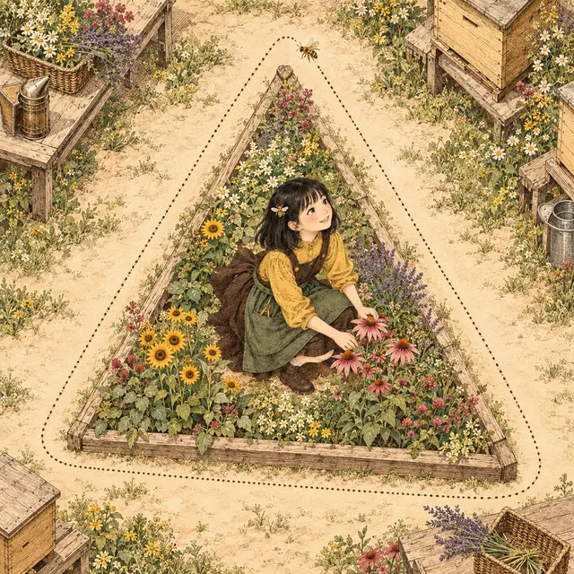

課前暖身漫畫：蜂巢為什麼是正六邊形？
小蜜捧著一片蜂巢框，每一格都是正六邊形，排得密密麻麻、沒有一點空隙。阿蜂不服氣，用紙剪了三個正五邊形在桌上拼拼看，卻怎麼拼都留下一條縫——小蜜拿出圓規：正六邊形的每一個內角是 120°，三個剛好圍成 360°！這一節學完，你就能自己算出每一種正多邊形的內角。
重點 1：角的分類，餘角與補角
重點整理與敘述
- 兩條射線 \(\overrightarrow{BA}\)、\(\overrightarrow{BC}\) 相交於 \(B\) 點，夾出的角記為 \(\angle ABC\)，簡記為 \(\angle B\)；\(B\) 是頂點，兩條射線是角的邊。
- 角的大小只看張開的程度，跟邊畫多長無關。
| 名稱 | 度數 |
|---|---|
| 銳角 | \(0^\circ \lt \angle B \lt 90^\circ\) |
| 直角 | \(\angle B = 90^\circ\) |
| 鈍角 | \(90^\circ \lt \angle B \lt 180^\circ\) |
| 平角 | \(\angle B = 180^\circ\) |
| 周角 | \(\angle B = 360^\circ\) |
- 兩個角的度數和是 \(90^\circ\)，稱這兩個角互為餘角（互餘）；和是 \(180^\circ\)，稱這兩個角互為補角（互補）。
- 只看度數和：兩個角不必拼在一起、也不必有共同頂點。例如 \(\angle P = 25^\circ\)、\(\angle Q = 65^\circ\) 分開畫在兩處，仍然互餘。
- 例：\(\angle A = 40^\circ\)，\(\angle B\) 和 \(\angle A\) 互餘，\(\angle C\) 和 \(\angle B\) 互補，則 \[\begin{aligned} & \angle B = 90^\circ - 40^\circ = 50^\circ \\ & \angle C = 180^\circ - 50^\circ = 130^\circ \end{aligned}\]
- 判斷三點共線：\(\angle AOC = 72^\circ\)、\(\angle BOC = 108^\circ\) 互補，但 \(A\) 點也可能落在 \(\angle BOC\) 裡面，所以 \(A\)、\(O\)、\(B\) 不一定在同一直線上；要 \(\angle AOC\) 與 \(\angle BOC\) 分在 \(\overrightarrow{OC}\) 的兩側才行。
\(\angle 3 + \angle 4 = 180^\circ\) ⇒ \(\angle 3\)、\(\angle 4\) 互為補角
視覺互動探索：黃銅圓規張開的角
「分類」模式拉動角度，看它落在分類尺的哪一區；切到「互餘」「互補」，拉動 \(\angle 1\)（或 \(\angle 3\)），看另一個角怎麼跟著變，兩者的和永遠不變。
形成性評量 (餘角與補角)
Q1. 已知 \(\angle A = 37^\circ\)，\(\angle B\) 和 \(\angle A\) 互餘，\(\angle C\) 和 \(\angle B\) 互補，則 \(\angle C\) 是多少度？
解析：答案為 C。
\[\begin{aligned} & \angle B = 90^\circ - 37^\circ = 53^\circ \\ & \angle C = 180^\circ - 53^\circ = 127^\circ \end{aligned}\]
A 錯：\(53^\circ\) 是 \(\angle B\)，還要再求它的補角。
B 錯：\(180^\circ - 37^\circ = 143^\circ\) 是 \(\angle A\) 的補角，題目要的是 \(\angle B\) 的補角。
D 錯：\(90^\circ - 53^\circ = 37^\circ\) 是把「互補」看成「互餘」了。
Q2. 下列敘述何者正確？
解析：答案為 B。鈍角 \(\angle P\) 滿足 \(90^\circ \lt \angle P \lt 180^\circ\)，它的補角 \(180^\circ - \angle P\) 就在 \(0^\circ\) 與 \(90^\circ\) 之間，一定是銳角。
A 錯：互補只看度數和是不是 \(180^\circ\)，兩個角可以分開畫在不同地方。
C 錯：銳角的餘角是 \(90^\circ\) 減去一個銳角，還是銳角。
D 錯：例如 \(30^\circ\) 與 \(40^\circ\) 都是銳角，和是 \(70^\circ\)，不互餘。
重點 2：兩直線相交——對頂角相等
重點整理與敘述
- 直線 \(L\) 與 \(M\) 相交於 \(O\) 點，以 \(O\) 為頂點的四個角中，不相鄰的兩個角互為對頂角：\(\angle 1\) 與 \(\angle 3\)、\(\angle 2\) 與 \(\angle 4\)。
- 對頂角相等的理由：相鄰兩角拼成一直線，所以 \[\begin{aligned} & \angle 1 + \angle 2 = 180^\circ \\ & \angle 3 + \angle 2 = 180^\circ \end{aligned}\] 兩式比較，得 \(\angle 1 = \angle 3\)；同理 \(\angle 2 = \angle 4\)。
- 常見誤會：兩個角共用一個頂點，不代表是對頂角。對頂角必須由同樣兩條直線相交形成、而且不相鄰。
- 例：三直線交於 \(O\)，依序形成 \(\angle 1\)～\(\angle 6\)。若 \(\angle 1 = 100^\circ\)、\(\angle 3 = 42^\circ\)，因為 \(\angle 1\)、\(\angle 2\)、\(\angle 3\) 拼成平角， \[\begin{aligned} & \angle 2 = 180^\circ - 100^\circ - 42^\circ \\ & = 38^\circ \end{aligned}\] 再由對頂角相等，\(\angle 4 = 100^\circ\)、\(\angle 5 = 38^\circ\)、\(\angle 6 = 42^\circ\)。
且對頂角的度數相等
視覺互動探索：交叉的兩根木條
拉動 \(\angle 1\)，看對面的 \(\angle 3\) 怎麼跟著變；切到「三條直線」，再拉 \(\angle 2\)，找出哪幾對才是對頂角。
形成性評量 (對頂角)
Q3. 直線 \(L\) 與 \(M\) 相交於 \(O\) 點，形成 \(\angle 1\)～\(\angle 4\)，其中 \(\angle 1\) 與 \(\angle 3\) 是對頂角，\(\angle 2\) 與 \(\angle 1\) 相鄰。若 \(\angle 1 = (4x + 12)^\circ\)、\(\angle 3 = (6x - 20)^\circ\)，則 \(\angle 2\) 是多少度？
解析：答案為 D。對頂角相等：
\[\begin{aligned} & 4x + 12 = 6x - 20 \\ & 32 = 2x,\ x = 16 \end{aligned}\]
\(\angle 1 = 4 \times 16 + 12 = 76^\circ\)，\(\angle 2\) 與 \(\angle 1\) 互補，\(\angle 2 = 180^\circ - 76^\circ = 104^\circ\)。
A 錯：\(76^\circ\) 是 \(\angle 1\) 本身。
B 錯：\(16\) 是 \(x\) 的值，不是角度。
C 錯：\(\angle 1 + \angle 3 = 152^\circ\)，相鄰的 \(\angle 2\) 要和 \(\angle 1\) 互補，不是另外兩角的和。
Q4. 如圖，三條直線 \(L\)、\(M\)、\(N\) 交於 \(O\) 點，依序形成 \(\angle 1\)～\(\angle 6\)（\(\angle 1\) 與 \(\angle 4\)、\(\angle 2\) 與 \(\angle 5\)、\(\angle 3\) 與 \(\angle 6\) 分別為對頂角）。若 \(\angle 1 = 47^\circ\)、\(\angle 5 = 71^\circ\)，則 \(\angle 3\) 是多少度？
解析：答案為 A。\(\angle 2\) 與 \(\angle 5\) 是對頂角，\(\angle 2 = 71^\circ\)；\(\angle 1\)、\(\angle 2\)、\(\angle 3\) 拼成平角：
\[\begin{aligned} & \angle 3 = 180^\circ - 47^\circ - 71^\circ \\ & = 62^\circ \end{aligned}\]
B 錯：\(180^\circ - 47^\circ\) 漏減了 \(\angle 2\)。
C 錯：\(180^\circ - 71^\circ\) 漏減了 \(\angle 1\)。
D 錯：\(71^\circ\) 是 \(\angle 2\)（也是 \(\angle 5\)），\(\angle 3\) 和 \(\angle 5\) 不是對頂角。
重點 3：三角形內角和定理——任意三角形的內角和是 \(180^\circ\)
重點整理與敘述
- 摺紙驗證：在銳角 \(\triangle ABC\) 中先摺出 \(\overline{BC}\) 上的高 \(\overline{AD}\)，再把三個頂點 \(A\)、\(B\)、\(C\) 都摺到 \(D\) 點，三個角剛好拼成一個平角。直角、鈍角三角形也拼得起來。
- 所以任意三角形的三個內角加起來都是 \(180^\circ\)，不論三角形長什麼樣子。
- 已知兩個角，第三個角 \(= 180^\circ -\) 另外兩角。
- 三個角用代數式表示時，把三式加起來等於 \(180\) 列方程式。例：三內角為 \((2x - 10)^\circ\)、\(x^\circ\)、\((3x + 10)^\circ\)， \[\begin{aligned} & (2x - 10) + x + (3x + 10) \\ & = 180 \\ & 6x = 180,\ x = 30 \end{aligned}\]
- 看最大角分類：最大角小於 \(90^\circ\) 是銳角三角形、等於 \(90^\circ\) 是直角三角形、大於 \(90^\circ\) 是鈍角三角形。內角和只有 \(180^\circ\)，所以一個三角形最多只有一個直角或鈍角。
視覺互動探索：撕下三個角拼成平角
拉動 \(\angle A\)、\(\angle B\) 改變三角形的形狀，\(\angle C\) 會自動跟著變。下方把三個角撕下來、頂點對在一起，看它們是不是永遠剛好拼成一直線。
形成性評量 (三角形內角和)
Q5. \(\triangle ABC\) 的三個內角分別為 \((3x + 8)^\circ\)、\((5x - 4)^\circ\)、\((2x + 16)^\circ\)，則最大的內角是多少度？
解析：答案為 C。
\[\begin{aligned} & (3x + 8) + (5x - 4) \\ & \quad + (2x + 16) = 180 \\ & 10x + 20 = 180 \\ & x = 16 \end{aligned}\]
三個角是 \(56^\circ\)、\(76^\circ\)、\(48^\circ\)（加起來 \(180^\circ\)），最大的是 \(76^\circ\)。
A 錯：\(16\) 是 \(x\) 的值，還要代回去。
B 錯：\(56^\circ\) 是 \((3x + 8)^\circ\)，不是最大的角。
D 錯：\(5 \times 16 = 80\) 忘了減 \(4\)。
Q6. \(\triangle ABC\) 中，\(\angle A : \angle B : \angle C = 3 : 5 : 7\)，則 \(\triangle ABC\) 是哪一種三角形？
解析：答案為 B。\(180^\circ\) 分成 \(3 + 5 + 7 = 15\) 份，每份 \(12^\circ\)，三個角是 \(36^\circ\)、\(60^\circ\)、\(84^\circ\)。最大的 \(\angle C = 84^\circ \lt 90^\circ\)，所以是銳角三角形。
A 錯：要有一個角剛好 \(90^\circ\) 才是直角三角形。
C 錯：\(7\) 份看起來很多，實際只有 \(84^\circ\)，沒有超過 \(90^\circ\)。
D 錯：有比例、又知道內角和是 \(180^\circ\)，三個角就都求得出來。
重點 4：外角——內角與它的外角互補，外角就是轉彎角
重點整理與敘述
- 三角形一個內角的一邊，與另一邊的延長線所夾的角，稱為這個內角的外角。
- 延長哪一邊都可以，所以每個內角有兩個外角；這兩個外角是對頂角，一樣大。
- 每一個內角都與它的外角互補：內角 \(+\) 外角 \(= 180^\circ\)。
- 常見誤會：把兩邊都延長，兩條延長線所夾的角是內角的對頂角，不是外角。
- 外角就是轉彎角：沿著路線走，在轉角處前進的方向轉過的角，就是那個轉角的外角。例：遊園車從 \(P\) 經過 \(D\) 到 \(Q\)，\(\angle EDF = 70^\circ\)，在 \(D\) 點轉了 \[180^\circ - 70^\circ = 110^\circ\]
轉角處轉過的角 \(=\) 該轉角的外角
視覺互動探索：花圃小徑的轉彎角
「轉彎」模式拉動 \(\angle ABC\)，看走到 \(B\) 點要轉幾度；切到「兩個外角」，看同一個內角延長不同的邊得到的兩個外角，以及那個「不是外角」的角。
形成性評量 (外角與轉彎角)
Q7. 阿蜂從 \(A\) 點走到 \(B\) 點，轉彎後走到 \(C\) 點，再轉彎走到 \(D\) 點，兩次都向左轉。若 \(\angle ABC = 118^\circ\)、\(\angle BCD = 141^\circ\)，他一共轉了多少度？
解析：答案為 A。每次轉的角是那個轉角的外角：
\[\begin{aligned} & (180^\circ - 118^\circ) + (180^\circ - 141^\circ) \\ & = 62^\circ + 39^\circ = 101^\circ \end{aligned}\]
B 錯：\(118^\circ + 141^\circ\) 是兩個轉角本身的和，不是轉過的角。
C 錯：\(62^\circ\) 只算了在 \(B\) 點的那一次轉彎。
D 錯：\(141^\circ - 118^\circ\) 沒有意義，轉彎角要各自用 \(180^\circ\) 減。
Q8. \(\triangle ABC\) 中，\(\angle A = 64^\circ\)。延長 \(\overline{BA}\) 超過 \(A\) 點，與 \(\overline{AC}\) 所夾的角為 \(\angle 1\)；延長 \(\overline{CA}\) 超過 \(A\) 點，與 \(\overline{AB}\) 所夾的角為 \(\angle 2\)。下列何者正確？
解析：答案為 D。\(\angle 1\)、\(\angle 2\) 都是「一邊與另一邊的延長線」所夾的角，都是 \(\angle A\) 的外角，各自與 \(\angle A\) 互補：
\[\angle 1 = \angle 2 = 180^\circ - 64^\circ = 116^\circ\]
A 錯：\(\angle 2\) 也是外角，不是 \(\angle A\) 的對頂角。兩條延長線所夾的那個角才是 \(64^\circ\)。
B 錯：\(90^\circ - 64^\circ\) 是餘角，外角與內角是互補。
C 錯：兩個外角是對頂角，一樣大，和是 \(232^\circ\)。
重點 5：三角形外角和定理——一組外角和是 \(360^\circ\)
重點整理與敘述
- 每個頂點各取一個外角，合起來稱為三角形的一組外角。
- 繞一圈的想法：沿三角形的邊走一圈回到出發點，每個頂點轉一次彎，轉過的就是一組外角；把三角形縮成一點，就像在原地轉一整圈，所以合起來是 \(360^\circ\)。
- 用內角和推：每個內角與它的外角互補，三個頂點加起來是 \(3 \times 180^\circ = 540^\circ\)，扣掉內角和 \(180^\circ\)： \[\begin{aligned} & \angle 1 + \angle 2 + \angle 3 \\ & = 540^\circ - 180^\circ = 360^\circ \end{aligned}\]
- 例：一組外角為 \(2x^\circ\)、\(3x^\circ\)、\(4x^\circ\)，則 \(9x = 360\)、\(x = 40\)，外角為 \(80^\circ\)、\(120^\circ\)、\(160^\circ\)，最大內角是 \(180^\circ - 80^\circ = 100^\circ\)——最小的外角配最大的內角。
- 判斷「可不可能是一組外角」：三個角的和要剛好 \(360^\circ\)，而且每一個都要小於 \(180^\circ\)（內角大於 \(0^\circ\)）。

視覺互動探索：繞三角形花壇飛一圈
拉動 \(\angle A\)、\(\angle B\) 改變三角形，右邊把三個外角拼在一起；再把「縮小比例」往左拉，看三個外角越來越靠近、最後像在同一點轉了一整圈。
形成性評量 (三角形外角和)
Q9. 某三角形的一組外角為 \((3x)^\circ\)、\((4x - 6)^\circ\)、\((3x + 6)^\circ\)，則此三角形最小的內角是多少度？
解析：答案為 C。
\[\begin{aligned} & 3x + (4x - 6) + (3x + 6) = 360 \\ & 10x = 360,\ x = 36 \end{aligned}\]
三個外角是 \(108^\circ\)、\(138^\circ\)、\(114^\circ\)，對應的內角是 \(72^\circ\)、\(42^\circ\)、\(66^\circ\)。最大的外角 \(138^\circ\) 配最小的內角 \(42^\circ\)。
A 錯：\(36\) 是 \(x\) 的值。
B 錯：\(138^\circ\) 是最大的外角，還要換成內角。
D 錯：\(72^\circ\) 是最小外角 \(108^\circ\) 對應的內角，它是最大的內角。
Q10. 下列哪一組角度，可能是某一個三角形的一組外角？
解析：答案為 B。\(97^\circ + 126^\circ + 137^\circ = 360^\circ\)，而且每個都小於 \(180^\circ\)；對應的內角 \(83^\circ\)、\(54^\circ\)、\(43^\circ\) 加起來正好 \(180^\circ\)。
A 錯：和是 \(350^\circ\)，不是 \(360^\circ\)。
C 錯：和雖然是 \(360^\circ\)，但外角 \(180^\circ\) 對應的內角是 \(0^\circ\)，畫不出三角形。
D 錯：和是 \(370^\circ\)，不是 \(360^\circ\)。
重點 6：三角形外角定理——外角等於不相鄰兩內角的和
重點整理與敘述
- \(\triangle ABC\) 中，\(\angle 1\) 是 \(\angle A\) 的外角（\(\angle 4 = \angle A\)、\(\angle 5 = \angle B\)、\(\angle 6 = \angle C\)）： \[\begin{aligned} & \angle 1 + \angle 4 = 180^\circ \\ & \angle 4 + \angle 5 + \angle 6 = 180^\circ \end{aligned}\] 兩式比較，得 \(\angle 1 = \angle 5 + \angle 6\)。
- 和外角相鄰的那個內角不算；要加的是另外兩個內角。
- 例：\(\angle B = 30^\circ\)、\(\angle C = 45^\circ\)，\(\angle A\) 的外角 \(= 30^\circ + 45^\circ = 75^\circ\)，不必先求 \(\angle A\)。
- 例：\(\angle B\) 的外角為 \(120^\circ\)，且 \(\angle C = 2\angle A\)。設 \(\angle A = x^\circ\)， \[\begin{aligned} & x + 2x = 120 \\ & x = 40 \end{aligned}\]
- 反過來也好用：外角 \(-\) 一個不相鄰的內角 \(=\) 另一個不相鄰的內角。
\(\angle ACD = \angle A + \angle B\)
視覺互動探索：把兩個內角搬進外角
拉動 \(\angle A\)、\(\angle B\)，看外角 \(\angle ACD\) 的度數；按「搬過去看看」，過 \(C\) 作 \(\overline{BA}\) 的平行線，外角被切成剛好等於 \(\angle B\) 與 \(\angle A\) 的兩塊。
形成性評量 (外角定理)
Q11. \(\triangle ABC\) 中，\(\angle C\) 的外角為 \(128^\circ\)，且 \(\angle A = 3\angle B\)，則 \(\angle A\) 是多少度？
解析：答案為 D。\(\angle C\) 的外角等於不相鄰的 \(\angle A + \angle B\)。設 \(\angle B = x^\circ\)，
\[\begin{aligned} & 3x + x = 128 \\ & x = 32 \end{aligned}\]
\(\angle A = 3 \times 32^\circ = 96^\circ\)。
A 錯：\(32^\circ\) 是 \(\angle B\)。
B 錯：誤列 \(4x = 180 - 128 = 52\)、再算 \(\angle A = 3 \times 13 = 39\)。\(52^\circ\) 是 \(\angle C\) 本身，外角定理要加的是另外兩個內角。
C 錯：\(52^\circ\) 是 \(\angle C\)。
Q12. 如圖，\(\triangle ABC\) 中，\(D\) 點在 \(\overline{BC}\) 上。若 \(\angle B = 47^\circ\)、\(\angle BAD = 29^\circ\)、\(\angle DAC = 38^\circ\)，則 \(\angle C\) 是多少度？
解析：答案為 A。\(\angle ADC\) 是 \(\triangle ABD\) 的外角：
\[\begin{aligned} & \angle ADC = 47^\circ + 29^\circ = 76^\circ \\ & \angle C = 180^\circ - 76^\circ - 38^\circ = 66^\circ \end{aligned}\]
驗算：\(\triangle ABC\) 中 \(47^\circ + (29^\circ + 38^\circ) + 66^\circ = 180^\circ\)。
B 錯：\(76^\circ\) 是 \(\angle ADC\)。
C 錯：\(104^\circ\) 是 \(\angle ADB\)。
D 錯：\(47^\circ + 38^\circ\) 把不在同一個三角形的兩個角加在一起。
重點 7：8 字形——\(\angle A + \angle B = \angle C + \angle D\)
重點整理與敘述
- \(\overline{AD}\) 與 \(\overline{BC}\) 交於 \(O\) 點，連接 \(\overline{AB}\) 與 \(\overline{CD}\)，得到上下兩個三角形，形狀像「8」或沙漏。
- 解法一（外角定理）：\(\angle 1\) 同時是 \(\triangle AOB\) 與 \(\triangle COD\) 的外角，所以 \(\angle 1 = \angle A + \angle B\)，也 \(= \angle C + \angle D\)。
- 解法二（內角和）：兩個三角形的內角和都是 \(180^\circ\)，而 \(\angle AOB = \angle COD\)（對頂角），扣掉這個相同的角，剩下的兩角和相等。
- 例：\(\angle A = x^\circ\)、\(\angle B = 45^\circ\)、\(\angle C = (2x - 5)^\circ\)、\(\angle D = 30^\circ\)， \[\begin{aligned} & x + 45 = (2x - 5) + 30 \\ & x = 20 \end{aligned}\]
- 五角星：連接其中兩個尖角之間的線段，就能用 8 字形把五個尖角搬進同一個三角形裡，所以五個尖角的和是 \(180^\circ\)。
視覺互動探索：沙漏形的竹竿架
拉動 \(\angle A\)、\(\angle B\)、\(\angle C\)，\(\angle D\) 會自動算出來。不論怎麼調，上下兩個三角形中間那對對頂角一樣大，所以 \(\angle A + \angle B\) 永遠等於 \(\angle C + \angle D\)。
形成性評量 (8 字形)
Q13. 如圖，\(\overline{AD}\) 與 \(\overline{BC}\) 交於 \(O\) 點，連接 \(\overline{AB}\) 與 \(\overline{CD}\)。若 \(\angle A = x^\circ\)、\(\angle B = 58^\circ\)、\(\angle C = (2x - 26)^\circ\)、\(\angle D = 43^\circ\)，則 \(x\) 是多少？
解析：答案為 C。8 字形 \(\angle A + \angle B = \angle C + \angle D\)：
\[\begin{aligned} & x + 58 = (2x - 26) + 43 \\ & x + 58 = 2x + 17 \\ & x = 41 \end{aligned}\]
驗算：\(41 + 58 = 99\)、\(56 + 43 = 99\)。
A 錯：\(56\) 是 \(\angle C\) 的度數，不是 \(x\)。
B 錯：\(99\) 是 \(\angle A + \angle B\)。
D 錯：\(81\) 是中間那對對頂角 \(\angle AOB\) 的度數。
Q14. 如圖，五角星 \(ABCDE\) 的五個尖角中，\(\angle A = 31^\circ\)、\(\angle B = 38^\circ\)、\(\angle C = 42^\circ\)、\(\angle D = 29^\circ\)，則 \(\angle E\) 是多少度？
解析：答案為 D。五角星五個尖角的和是 \(180^\circ\)（用 8 字形把其中兩個尖角搬進另一個三角形）：
\[\begin{aligned} & 31^\circ + 38^\circ + 42^\circ + 29^\circ \\ & = 140^\circ \\ & \angle E = 180^\circ - 140^\circ \\ & = 40^\circ \end{aligned}\]
A 錯：誤把五個尖角的和當成 \(360^\circ\)。
B 錯：\(140^\circ\) 是四個已知角的和。
C 錯：誤把五個尖角的和當成五邊形的內角和 \(540^\circ\)；尖角不是五邊形的內角。
重點 8：鏢形——\(\angle BCD = \angle A + \angle B + \angle D\)，認識輔助線
重點整理與敘述
- 四邊形 \(ABCD\) 的 \(C\) 點往內凹（凹四邊形），形狀像飛鏢的箭頭，稱為鏢形。這裡的 \(\angle BCD\) 指凹口那一側、小於 \(180^\circ\) 的角。
- 解法一（外角定理）：連接 \(\overline{AC}\) 並延長，把圖形分成 \(\triangle ABC\) 與 \(\triangle ADC\)。\(\angle 1\)、\(\angle 2\) 分別是它們的外角： \[\begin{aligned} & \angle 1 = \angle B + \angle 3 \\ & \angle 2 = \angle D + \angle 4 \end{aligned}\] 相加得 \[\begin{aligned} & \angle BCD \\ & = \angle B + \angle D + (\angle 3 + \angle 4) \\ & = \angle A + \angle B + \angle D \end{aligned}\]
- 解法二（內角和）：連接 \(\overline{BD}\)，比較 \(\triangle BCD\) 與 \(\triangle ABD\) 的內角和，也能得到同一個結果。
- 像 \(\overline{AC}\) 的延長線、\(\overline{BD}\) 這樣在原圖上添加的線，稱為輔助線。適當加輔助線，常能把複雜的圖拆成會算的三角形。
- 例：鏢形中 \(\angle A = 60^\circ\)、\(\angle B = 25^\circ\)、\(\angle D = 35^\circ\)，則 \(\angle BCD\)
\({}= 60^\circ + 25^\circ + 35^\circ\) \({}= 120^\circ\)。
\(\angle BCD = \angle A + \angle B + \angle D\)
視覺互動探索：箭頭形的風箏骨架
拉動 \(\angle A\)、\(\angle B\)、\(\angle D\)，看凹進去的 \(\angle BCD\) 跟著怎麼變；按「連 \(\overline{AC}\) 並延長」，看輔助線把它拆成兩個三角形的外角。
形成性評量 (鏢形)
Q15. 如圖，鏢形 \(ABCD\) 中，\(C\) 點凹進去。若 \(\angle A = 52^\circ\)、\(\angle B = 23^\circ\)、\(\angle D = 31^\circ\)，則凹口那一側的 \(\angle BCD\) 是多少度？
解析：答案為 A。鏢形凹進去的角等於另外三個角的和：
\[\begin{aligned} & \angle BCD \\ & = 52^\circ + 23^\circ + 31^\circ \\ & = 106^\circ \end{aligned}\]
B 錯：\(180^\circ - 106^\circ\) 多做了一次求補角。
C 錯：\(360^\circ - 106^\circ = 254^\circ\) 是鏢形在 \(C\) 點的內角（凹角），不是凹口那一側的 \(\angle BCD\)。
D 錯：\(180^\circ - 52^\circ\) 只用了 \(\angle A\)。
Q16. 如圖，鏢形 \(ABCD\) 中，凹口那一側的 \(\angle BCD = 137^\circ\)，\(\angle A = 64^\circ\)、\(\angle B = 41^\circ\)，則 \(\angle D\) 是多少度？
解析：答案為 B。由 \(\angle BCD = \angle A + \angle B + \angle D\)：
\[\begin{aligned} & 137^\circ = 64^\circ + 41^\circ + \angle D \\ & \angle D = 32^\circ \end{aligned}\]
A 錯：\(105^\circ\) 是 \(\angle A + \angle B\)，還沒扣。
C 錯：\(180^\circ - 137^\circ\) 是把 \(\angle BCD\) 當成內角求補角。
D 錯：\(137^\circ - 64^\circ\) 漏減了 \(\angle B\)。
重點 9：凸多邊形與 \(n\) 邊形內角和 \((n - 2) \times 180^\circ\)
重點整理與敘述
- 把多邊形的任意一邊延長，其他各邊都在延長線的同一側，稱為凸多邊形；不是凸多邊形的稱為凹多邊形（例如鏢形）。凸多邊形的每個內角都小於 \(180^\circ\)。國中階段沒特別說明時，多邊形都指凸多邊形。
- 有 \(n\) 個邊的多邊形稱為 \(n\) 邊形。從一個頂點出發，連不到自己和相鄰的兩個頂點，所以能畫出 \((n - 3)\) 條對角線，把它切成 \((n - 2)\) 個三角形。
| \(n\) 邊形 | 對角線 | 三角形 | 內角和 |
|---|---|---|---|
| 四邊形 | \(1\) | \(2\) | \(360^\circ\) |
| 五邊形 | \(2\) | \(3\) | \(540^\circ\) |
| 六邊形 | \(3\) | \(4\) | \(720^\circ\) |
| 七邊形 | \(4\) | \(5\) | \(900^\circ\) |
- 例：十邊形的內角和 \(= (10 - 2) \times 180^\circ = 1440^\circ\)。
- 從內部一點切：連到 \(n\) 個頂點會切出 \(n\) 個三角形，但圍著中間那一點的一整圈 \(360^\circ\) 不是內角，要扣掉：\(n \times 180^\circ - 360^\circ\)
\({}= (n - 2) \times 180^\circ\)。四邊形切成 4 個三角形，內角和不是 \(720^\circ\)。
視覺互動探索：用繩子切開花壇
拉動 \(n\)，看從一個頂點畫出幾條對角線、切成幾個三角形；切到「從內部一點」，看為什麼要扣掉中間的 \(360^\circ\)。
形成性評量 (n 邊形內角和)
Q17. 十三邊形的內角和是多少度？
解析：答案為 C。
\[\begin{aligned} & (13 - 2) \times 180^\circ \\ & = 11 \times 180^\circ = 1980^\circ \end{aligned}\]
A 錯：\(13 \times 180^\circ\) 沒有減 \(2\)。
B 錯：\(12 \times 180^\circ\) 只減了 \(1\)。
D 錯：\(10 \times 180^\circ\) 用的是對角線條數 \(13 - 3\)，三角形個數是 \(13 - 2\)。
Q18. 一個凸 \(n\) 邊形，從其中一個頂點畫出所有的對角線，把它分成 \(14\) 個三角形。則 \(n\) 與這個 \(n\) 邊形的內角和分別是多少？
解析：答案為 A。三角形個數是 \(n - 2 = 14\)，所以 \(n = 16\)；內角和就是 \(14\) 個三角形的角：\(14 \times 180^\circ = 2520^\circ\)。
B 錯：把三角形個數當成邊數。
C 錯：\(n - 3\) 是對角線條數，不是三角形個數。
D 錯：\(16 \times 180^\circ\) 用的是邊數，應該乘三角形個數 \(14\)。
重點 10：正 \(n\) 邊形的每一個內角與每一個外角
重點整理與敘述
- 正 \(n\) 邊形：每條邊都等長、每個內角都相等。內角和 \((n - 2) \times 180^\circ\) 平分給 \(n\) 個角： \[\text{每一個內角} = \frac{(n - 2) \times 180^\circ}{n}\]
- 每個內角與它的外角互補，\(n\) 個外角也一樣大，合起來 \(360^\circ\)： \[\begin{aligned} & \text{每一個外角} = \frac{360^\circ}{n} \\ & \text{每一個內角} = 180^\circ - \frac{360^\circ}{n} \end{aligned}\]
- 例：正五邊形每一個內角 \(108^\circ\)、外角 \(72^\circ\)；新版 1 英鎊硬幣是正十二邊形，每一個內角 \(\frac{10 \times 180^\circ}{12} = 150^\circ\)。
- 只有「正」多邊形才能平分：六邊形的內角和是 \(720^\circ\)，但一般六邊形的六個角不一定都是 \(120^\circ\)。
- 拼在一起的正多邊形：正五邊形與正六邊形各有一邊在同一直線上、又有一個頂點重合，兩條斜邊和直線圍成一個三角形，底角分別是兩者的外角 \(72^\circ\)、\(60^\circ\)，頂角 \(= 180^\circ - 72^\circ - 60^\circ = 48^\circ\)。
每一個外角 \(= \frac{360^\circ}{n}\)
視覺互動探索：正多邊形的角規
拉動 \(n\)，看正 \(n\) 邊形的每一個內角與外角；切到「內角和相同、角不一樣」，看一般的 \(n\) 邊形為什麼不能用內角和除以 \(n\)。
形成性評量 (正 n 邊形)
Q19. 正十八邊形的每一個內角是多少度？
解析：答案為 D。每一個外角 \(= 360^\circ \div 18 = 20^\circ\)，所以每一個內角 \(= 180^\circ - 20^\circ = 160^\circ\)。也可以算 \(\frac{16 \times 180^\circ}{18} = 160^\circ\)。
A 錯：\(20^\circ\) 是每一個外角。
B 錯：\(2880^\circ\) 是內角和，還要除以 \(18\)。
C 錯：\(180^\circ - 180^\circ \div 18\) 把外角和寫成 \(180^\circ\)，外角和是 \(360^\circ\)。
Q20. 如圖，正五邊形與正八邊形各有一邊在直線 \(L\) 上，且兩個圖形有一個頂點重合於 \(P\) 點，則 \(\angle 1\) 是多少度？
解析：答案為 C。兩條斜邊與直線 \(L\) 圍成一個三角形，兩個底角分別是正五邊形與正八邊形的外角：
\[\begin{aligned} & 360^\circ \div 5 = 72^\circ,\ 360^\circ \div 8 = 45^\circ \\ & \angle 1 = 180^\circ - 72^\circ - 45^\circ = 63^\circ \end{aligned}\]
A 錯：\(72^\circ + 45^\circ\) 是兩個底角的和，還要用 \(180^\circ\) 減。
B 錯：\(135^\circ - 108^\circ\) 是兩個內角的差，沒有意義。
D 錯：\(45^\circ\) 只是正八邊形的外角。
重點 11：已知角度，反求正 \(n\) 邊形的 \(n\)
重點整理與敘述
- 先換成外角最快：正 \(n\) 邊形的外角都一樣大、合起來 \(360^\circ\)，所以 \[n = 360 \div \text{每一個外角}\]
- 例：每一個內角 \(156^\circ\)，外角 \(= 180^\circ - 156^\circ = 24^\circ\)，\(n = 360 \div 24 = 15\)。也可以解 \(180 - \frac{360}{n} = 156\)，答案相同。
- 內角是外角的幾倍：設外角 \(x^\circ\)，內角就是倍數乘 \(x^\circ\)，兩者互補列式。例：內角是外角的 \(3\) 倍， \[\begin{aligned} & x + 3x = 180,\ x = 45 \\ & n = 360 \div 45 = 8 \end{aligned}\]
- 算出來不是整數就不存在：每一個內角 \(130^\circ\) 時外角 \(50^\circ\)，\(360 \div 50\) 不是整數，所以沒有這樣的正多邊形。
視覺互動探索：反推涼亭有幾個邊
「已知內角」模式拉動每一個內角的度數，跟著三個步驟求 \(n\)，也看看哪些角度根本做不出正多邊形；切到「內角是外角的 \(k\) 倍」，選一個倍數，用設未知數的方法求 \(n\)。
形成性評量 (反求 n)
Q21. 若正 \(n\) 邊形的每一個內角是 \(168^\circ\)，則 \(n\) 是多少？
解析：答案為 B。每一個外角 \(= 180^\circ - 168^\circ = 12^\circ\)，
\[n = 360 \div 12 = 30\]
驗算：\(\frac{28 \times 180^\circ}{30} = 168^\circ\)。
A 錯：\(12\) 是外角的度數，不是邊數。
C 錯：\(28\) 是 \(n - 2\)。
D 錯：\(180 \div 12 = 15\) 把外角和寫成 \(180^\circ\)。
Q22. 某正 \(n\) 邊形的每一個內角，恰好是每一個外角的 \(9\) 倍，則 \(n\) 是多少？
解析：答案為 A。設每一個外角 \(x^\circ\)，內角 \(9x^\circ\)：
\[\begin{aligned} & x + 9x = 180,\ x = 18 \\ & n = 360 \div 18 = 20 \end{aligned}\]
B 錯：\(18^\circ\) 是外角的度數。
C 錯：\(10\) 是 \(x + 9x\) 的係數，不是邊數。
D 錯：\(162^\circ\) 是每一個內角。
小節總結與核心回顧
內角與外角速查表
- 互餘：和 \(90^\circ\)；互補：和 \(180^\circ\)；只看度數和。
- 對頂角：兩直線相交、不相鄰的兩角，相等。
- 三角形內角和：\(180^\circ\)。
- 外角：一邊與另一邊的延長線所夾的角，與內角互補；轉彎角就是外角。
- 三角形外角和：一組外角和 \(360^\circ\)。
- 外角定理：外角 \(=\) 不相鄰兩內角的和。
- 8 字形：\(\angle A + \angle B = \angle C + \angle D\)；鏢形：凹進去的角 \(=\) 另外三角的和。
- \(n\) 邊形內角和：\((n - 2) \times 180^\circ\)。
- 正 \(n\) 邊形：每一個外角 \(\frac{360^\circ}{n}\)，每一個內角 \(180^\circ - \frac{360^\circ}{n}\)；反求 \(n\) 先換成外角。
回到蜂巢：為什麼是正六邊形？
圍著一個點拼一圈
蜂巢的格子要一格挨一格、不留縫，就必須有幾個相同的角圍著一點剛好拼成 \(360^\circ\)。正六邊形每一個內角 \(180^\circ - 60^\circ = 120^\circ\)，
\(3 \times 120^\circ\)
正五邊形為什麼不行？
正五邊形每一個內角 \(108^\circ\)：三個是 \(324^\circ\)，留下 \(36^\circ\) 的縫；四個是 \(432^\circ\)，又疊在一起。能單獨拼滿平面的正多邊形只有正三角形（\(6 \times 60^\circ\)）、正方形（\(4 \times 90^\circ\)）和正六邊形；三者之中，同樣的周長，正六邊形圍出的面積最大，蜜蜂用最少的蜂蠟蓋出最大的儲藏空間。
下一節預告
知道了角的關係之後，下一節「尺規作圖」只用一把沒有刻度的直尺和一支圓規，畫出等長的線段、等大的角、中垂線和角平分線。